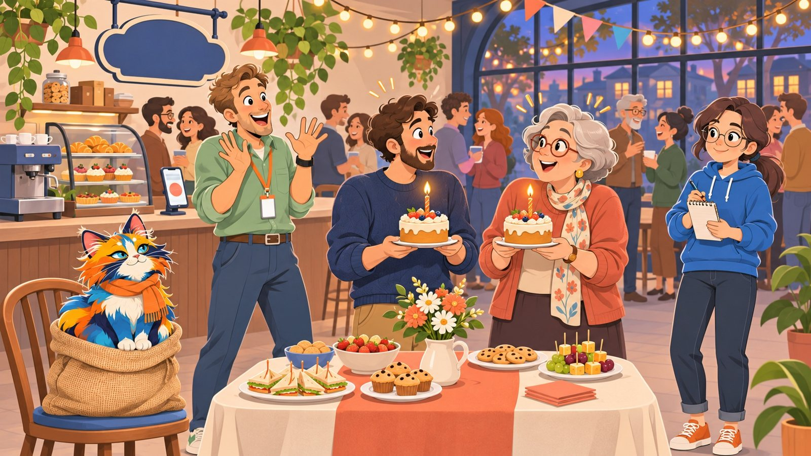
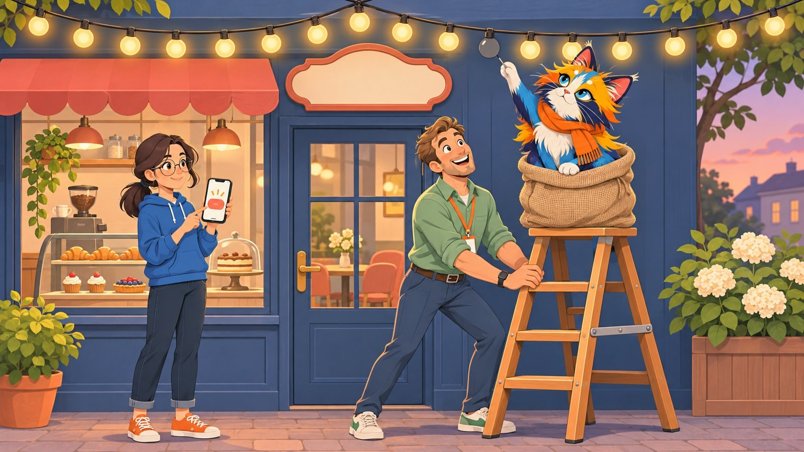
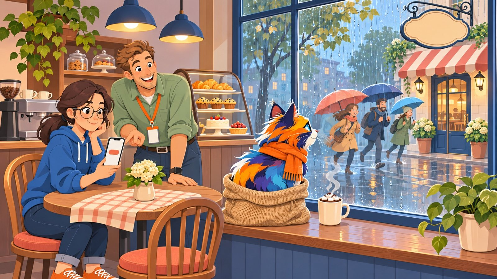

Гости входят по одному. Второму нужно не попасть в день первого, третьему — в дни двух первых, и так далее. Если все промахнулись — совпадений нет. Во всех остальных вечеринках оно есть.
Сначала вспомним
Котейка бросает два кубика. Сумма 7 — посуду моет Боб, сумма 12 — Алиса. Кому выпадает чаще?
Исходов 36: синий кубик × красный. Сумма 7 — шесть клеток (1 + 6, 2 + 5, … 6 + 1), сумма 12 — одна (6 + 6). Боб моет посуду в 6 вечерах из 36, Алиса — в одном.
В понедельник десерт заказали 8 гостей из 10, во вторник — 2 из 10. Что скорее всего случилось?
Короткая серия скачет, длинная успокаивается — шаг 2. По 10 гостей при честной половине «8 и больше» бывает примерно в 55 днях из 1000, «2 и меньше» — тоже в 55.
Шаг 4 из 9
Не, и, или
После шага ты сможешь посчитать «хотя бы один» через «ни одного» и не складывать вероятности, когда так нельзя.

Кафе празднует открытие. Пришли 23 гостя — и у двоих день рождения в один день. Боб уверен, что это знак. Алиса уверена, что это арифметика. Кто прав?
Совпадение — это редкость?

Боб, продакт
В году 365 дней, а гостей всего 23. Шанс совпадения — от силы 6%. Это судьба!

Котейка
Ты ищешь совпадение только со своим днём. А совпасть может любая пара гостей — например, я и курьер. Сколько пар можно составить из 23 гостей? Давайте проверим: дни рождения раздам из мешка случайно.
Считаем, что все 365 дней равновероятны, 29 февраля не берём, и гости не связаны друг с другом: не близнецы и не пришли отмечать общий праздник.
Напиши число — на следующей карточке проверим.
Гости входят по одному
Календарь — 365 дней. Каждый гость — точка в свой день рождения; если день уже занят, обе точки вспыхивают.
Календарь на 365 дней: дни рождения гостей
день рождения гостясовпадение: 2 гостя в один день
0гостей в зале
0пар гостей
нетсовпадение
Гостей 23, а пар — 253
Боб сравнивал каждого гостя с одним днём в году. Но совпасть может любая пара: первый со вторым, первый с третьим, второй с третьим… Каждый новый гость здоровается со всеми, кто уже в зале, поэтому пары растут быстрее гостей.
23 гостя — это 23 · 22/2 = 253 пары — как рукопожатия из шага 3. У каждой пары шанс совпасть маленький, 1 из 365, но пар много.
Как часто есть совпадение, в зависимости от числа гостей
Половина вечеринок с совпадением — уже при 23 гостях, на 50 гостей совпадение есть в 97 вечеринках из 100. Обычно люди называют 150–180 гостей.
Тот же расчёт нужен, когда гостей делят на группы хешем: два разных гостя могут получить один хеш. Про хеш — в «A/B на пальцах», шаг 2 «Монетка, соль и хеш».
Идея из лекций: Joe Blitzstein, Stat 110 «Probability», лекция про дни рождения
«Хотя бы одно совпадение» = не «все разные»
Считать «хотя бы одна пара совпала» напрямую тяжело: совпасть могут одна пара, две, три… Противоположное событие одно и простое: у всех дни рождения разные.
История
В штуках
Из 1000 вечеринок на 23 гостя примерно в 493 у всех дни разные. Значит, в остальных 507 (50.7%) совпадение есть.
Формула
P(«все разные») = 365/365 · 364/365 · … · 343/365 ≈ 0.493
P(не A) = 1 − P(A), P(«совпадение») ≈ 1 − 0.493 = 0.507
Словами: вероятность «хоть раз» — это единица минус вероятность «ни разу».
«И» для независимых: умножаем
Над входом в кафе висит гирлянда. Каждая лампочка доживает до конца года с шансом 99%. Лампочки не влияют друг на друга: перегоревшая соседка не греет и не бережёт остальных.

История
Чтобы обе лампочки над дверью горели в декабре, должна выжить первая и вторая.
В штуках
Из 10 000 пар лампочек первая выживает в 9900. Среди этих 9900 вторая выживает тоже в 99% — в 9801 паре. Обе целы в 9801 паре из 10 000.
Формула
P(A и B) = P(A) · P(B) = 0.99 · 0.99 = 0.9801
Словами: если события не влияют друг на друга, долю от доли берём умножением.
Здесь «не влияют» — по смыслу: лампочки физически не связаны. Как проверить независимость числами, разберём в шаге 5.
Хотя бы одна из ста
В гирлянде 100 лампочек, каждая перегорает за год с шансом 1%. Как часто за год перегорит хотя бы одна?
Гирлянда: горящие и перегоревшие лампочки
горитперегорела
Теперь поменяй условие
63.4%хотя бы одна перегорит: 1 − (1 − p)n
100%«сложить шансы»: n · p
P(«хотя бы одна из n») = 1 − (1 − p)n, а не n · p
При 100 лампочках n · p уже 100%, а вероятность больше единицы не бывает. Сумма n · p — это среднее число перегоревших лампочек, а не шанс, что перегорит хоть одна.
«Или»: не считай общих дважды
Боб, продакт
Кофе берут 30% гостей, десерт — 40%. Значит, 70% берут хоть что‑то из двух!

Алиса, аналитик
А тех, кто берёт кофе с десертом, ты посчитал два раза.
1000 гостей: кофе, десерт и то и другое
1000 гостей кафе. Нажми кнопку, чтобы подсветить.
кофедесерткофе и десерт
В штуках
Из 1000 гостей 300 взяли кофе, 400 — десерт, 150 — и то и другое. Хотя бы одно взяли 300 + 400 − 150 = 550 гостей, а не 700.
Формула
P(A или B) = P(A) + P(B) − P(A и B)
Словами: сложи обе доли и вычти тех, кого посчитал дважды. Если A и B вместе не бывают, то есть несовместны, вычитать нечего — тогда просто сумма.
Напиши функцию для любой вечеринки
Допиши функцию p_shared(n): вероятность, что у n гостей хотя бы у двоих совпал день рождения. Подсказка — через «все разные».
Длинная цепочка надёжных шагов
Боб, продакт
Чтобы заказ приехал вовремя, нужны 7 шагов: заказ, оплата, кухня, упаковка, курьер, дорога, домофон. Каждый срабатывает в 90% случаев. Значит, вовремя приезжает 90% заказов — почти все!
Что не так у Боба, если шаги не влияют друг на друга?
«Вовремя» — это шаг 1 и шаг 2 и … шаг 7. Для независимых шагов: 0.97 ≈ 0.478. Из 1000 заказов вовремя приедут около 478 — меньше половины. Длинная цепочка из вероятных шагов вероятной быть не обязана.
Идея из книги: Daniel Kahneman, «Thinking, Fast and Slow» — опыт Майи Бар-Хиллел с цепочками событий
Три классические задачи
Схема ответа одна: переформулируй → посчитай в штуках → запиши формулу → проверь симуляцией → скажи вывод одной фразой.
В зале 23 человека. Какова вероятность, что хотя бы у двоих совпадает день рождения?
Переформулирую: «хотя бы одна пара совпала» — это не «у всех разные». Допущения: 365 равновероятных дней, люди не связаны друг с другом.
В штуках: второй человек не совпадает с первым в 364 случаях из 365, третий не попадает в два занятых дня в 363 из 365… Из 1000 таких залов у всех разные дни примерно в 493.
Формула: 1 − (365 · 364 · … · 343) / 36523 ≈ 0.507.
Проверка: 1000 вечеринок в игре или функция p_shared(23).
Вывод: чуть больше половины — потому что у 23 человек 253 пары, и совпасть может любая.
Кубик бросают шесть раз. Какова вероятность, что выпадут все шесть граней?
Переформулирую: это младший брат дней рождения: шесть «дней» и шесть «гостей», и нужно, чтобы никто не совпал.
В штуках: всех цепочек из шести бросков 66 = 46 656. Цепочек без повторов 6 · 5 · 4 · 3 · 2 · 1 = 720 по правилу умножения из шага 3. Это 720 из 46 656 — примерно 15 серий из 1000.
Формула: 6! / 66 = 720/46 656 ≈ 0.015.
Вывод: около 1.5%: хотя бы одна грань повторится в 985 сериях из 1000.
В гирлянде 100 лампочек, каждая перегорает за год с вероятностью 1%, независимо. Какова вероятность, что перегорит хотя бы одна?
Переформулирую: «хотя бы одна перегорит» — это не «все целы».
В штуках: из 1000 гирлянд все 100 лампочек доживают до конца года примерно в 366. В остальных 634 хотя бы одна перегорела.
Формула: 1 − 0.99100 ≈ 0.634. Ловушка: 100 · 1% = 100% — это среднее число перегоревших, то есть одна лампа, а не вероятность.
Вывод: примерно в двух годах из трёх, а не «наверняка».
Вопросы про «не, и, или»
У каждого из 50 курьеров шанс опоздать сегодня 2%, независимо от других. Как часто опоздает хотя бы один?
Все вовремя: 0.9850 ≈ 0.364. Хотя бы один опоздает: 1 − 0.364 ≈ 0.636 — примерно в 64 днях из 100.
Гость оформляет либо доставку, либо самовывоз — одновременно нельзя. Эти два события независимы?
Независимость — когда одно ничего не говорит о другом. А здесь «доставка» сразу говорит «не самовывоз». Числами: P(«оба») = 0, а P(«доставка») · P(«самовывоз») больше нуля. Несовместные события с ненулевыми вероятностями всегда зависимы.
40% гостей берут кофе, 30% — круассан. Какая доля берёт хотя бы одно из двух?
P(«кофе или круассан») = 40% + 30% − P(«оба»). Если все любители круассанов берут и кофе, выйдет 40%, если вместе не берёт никто — 70%. Без доли «оба» ответ не узнать.
Шевалье де Мере в XVII веке спорил: что вероятнее — хотя бы одна шестёрка за 4 броска кубика или хотя бы пара шестёрок за 24 броска двух кубиков?
Через «ни разу»: 1 − (5/6)4 ≈ 0.518 и 1 − (35/36)24 ≈ 0.491. По легенде, де Мере заметил на практике, что вторая ставка проигрывает, и написал Паскалю — с этой переписки началась теория вероятностей.
Идея из книги: Сара Бослаф, «Статистика для всех» — ставки шевалье де Мере
«Хотя бы один» — через «ни одного»
- Не: P(не A) = 1 − P(A). «Хотя бы один» трудно, «ни одного» легко.
- И для независимых: P(A и B) = P(A) · P(B). Цепочка из 7 шагов по 90% — это 0.97 ≈ 48%.
- Хотя бы один из n: 1 − (1 − p)n, а не n · p. 100 лампочек по 1% — 63.4%.
- Или: P(A или B) = P(A) + P(B) − P(A и B); для несовместных — просто сумма.
- Дни рождения: смотри на пары, а не на людей. 23 гостя — 253 пары и 50.7%, 50 гостей — 97%.
- Несовместные события с ненулевыми шансами зависимы: одно исключает другое.
- Дополнение
- событие «не A», все исходы, где A не случилось; на собеседовании — complement
- Независимые события
- одно не меняет шансов другого, поэтому «и» — произведение; на собеседовании — independent events
- Несовместные события
- не случаются вместе, поэтому «или» — сумма; на собеседовании — mutually exclusive, disjoint
- Включения и исключения
- P(A или B) = P(A) + P(B) − P(A и B); на собеседовании — inclusion–exclusion
